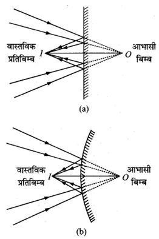
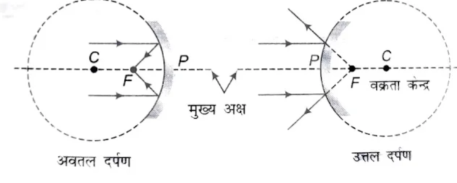
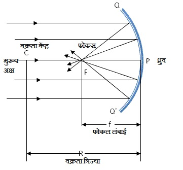
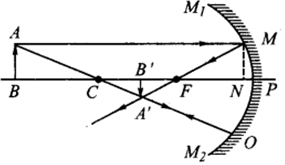
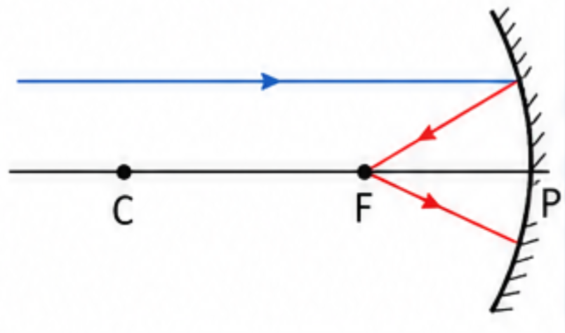
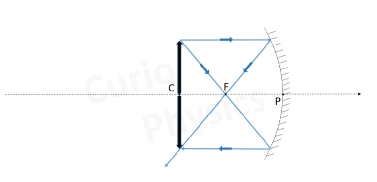
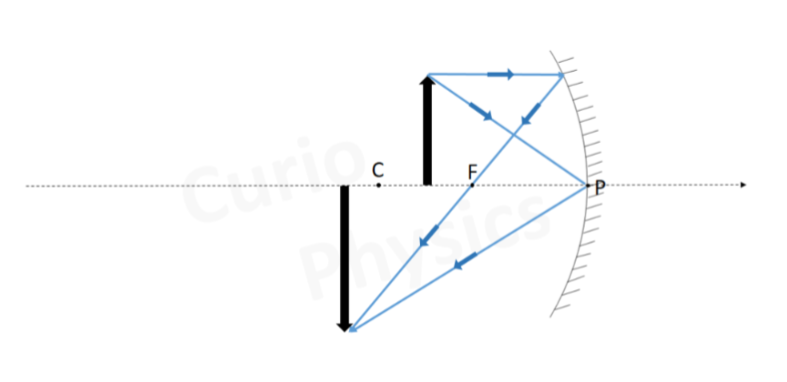
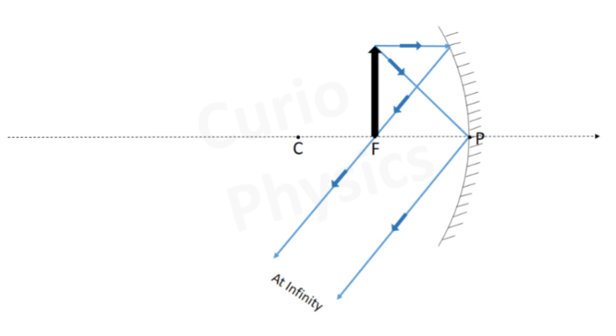
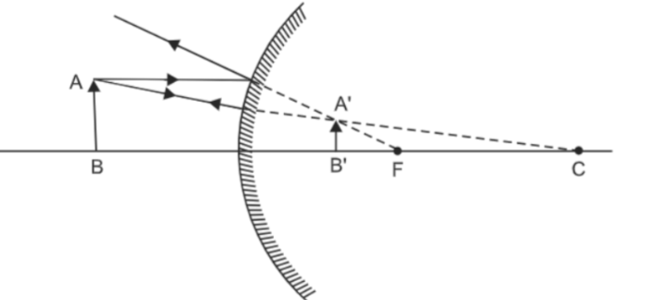

📘 Unit 6(A) - परावर्तन
प्रश्न: प्रकाशिकी क्या है?
भौतिकी की वह शाखा जिसके अन्तर्गत प्रकाश ऊर्जा एवं प्रकाश से सम्बन्धित घटनाओं का अध्ययन किया जाता है, प्रकाशिकी कहलाती है।
यह दो प्रकार की होती है —
यह दो प्रकार की होती है —
- किरण प्रकाशिकी।
- तरंग प्रकाशिकी।
प्रश्न: परावर्तन किसे कहते हैं? यह कितने प्रकार का होता है?
जब कोई प्रकाश किरण किसी सतह से टकराकर वापस उसी माध्यम में लौट आती है, तो इस घटना को परावर्तन कहा जाता है।
परावर्तन के प्रकार — परावर्तन दो प्रकार का होता है —

परावर्तन के प्रकार — परावर्तन दो प्रकार का होता है —
- नियमित परावर्तन — जब प्रकाश की समानांतर आपतित किरणों के लिए परावर्तित किरणें भी समानांतर होती हैं, तो इसे नियमित परावर्तन कहा जाता है।
उदाहरण – समतल दर्पण से प्रकाश का परावर्तन। - अनियमित परावर्तन — जब प्रकाश की समानांतर आपतित किरणों के लिए परावर्तित किरणें समानांतर नहीं होती हैं, तो इसे अनियमित परावर्तन कहा जाता है।
उदाहरण – दीवार, सड़क या कागज से प्रकाश का परावर्तन।
प्रश्न: नियमित परावर्तन और अनियमित परावर्तन में अंतर लिखिए।
| क्र.सं. | नियमित परावर्तन | अनियमित परावर्तन |
|---|---|---|
| 1. | प्रकाश की समानांतर आपतित किरणों के लिए परावर्तित किरणें भी समानांतर होती हैं। | प्रकाश की समानांतर आपतित किरणों के लिए परावर्तित किरणें समानांतर नहीं होती हैं। |
| 2. | यह चिकनी तथा समतल सतहों पर होता है। | यह असमतल या खुरदरी सतहों पर होता है। |
| 3. | इसमें प्रतिबिंब स्पष्ट दिखाई देता है। | इसमें प्रतिबिंब स्पष्ट दिखाई नहीं देता है। |
| 4. | उदाहरण – समतल दर्पण से प्रकाश का परावर्तन। | उदाहरण – दीवार, सड़क या कागज से प्रकाश का परावर्तन। |
प्रश्न: समतल दर्पण से परावर्तन का नामांकित चित्र बनाइए।

- दर्पण की सतह पर पड़ने वाली प्रकाश किरण को आपतित किरण कहते हैं।
- वह बिंदु जहाँ आपतित किरण दर्पण पर पड़ती है, आपतित बिंदु कहलाता है।
- दर्पण द्वारा वापस भेजी जाने वाली प्रकाश किरण को परावर्तित किरण कहते हैं।
प्रश्न: आपतन कोण क्या है?
आपतित किरण द्वारा आपतन बिंदु पर अभिलंब से बनाया गया कोण आपतन कोण कहलाता है। इसे \(i\) द्वारा निरूपित किया जाता है।
प्रश्न: परावर्तन कोण क्या है?
आपतन बिंदु पर अभिलंब से परावर्तित किरण द्वारा बनाया गया कोण परावर्तन कोण कहलाता है। इसे \(r\) द्वारा निरूपित किया जाता है।
प्रश्न: परावर्तन के नियम लिखिए।
परावर्तन की प्रक्रिया दो मुख्य नियमों पर आधारित होती है —
- आपतित किरण, परावर्तित किरण तथा अभिलंब तीनों एक ही समतल में स्थित रहते हैं।
- आपतन कोण सदैव परावर्तन कोण के बराबर होता है। अर्थात् \(\angle i = \angle r\)
प्रश्न: प्रतिबिंब किसे कहते हैं? यह कितने प्रकार का होता है?
जब किसी वस्तु से आने वाली प्रकाश किरणें किसी दर्पण या लेंस से परावर्तित या अपवर्तित होकर हमारी आँखों में पहुँचती हैं और हमें वस्तु का आभास किसी अन्य स्थान पर होता है, तो उस स्थान पर वस्तु का प्रतिबिंब बनता है।
प्रतिबिंब दो प्रकार के होते हैं —
प्रतिबिंब दो प्रकार के होते हैं —
- वास्तविक प्रतिबिंब: वह प्रतिबिंब जिसे स्क्रीन पर प्राप्त किया जा सकता है। इसमें परावर्तित किरणें वास्तव में एक बिंदु पर मिलती हैं।
उदाहरण — अवतल दर्पण द्वारा बना प्रतिबिंब। - आभासी प्रतिबिंब: वह प्रतिबिंब जिसे स्क्रीन पर प्राप्त नहीं किया जा सकता। इसमें परावर्तित किरणें एक बिंदु पर केवल मिलती हुई प्रतीत होती हैं।
उदाहरण — समतल दर्पण में बना प्रतिबिंब।

प्रश्न: समतल दर्पण से किसी वस्तु के प्रतिबिंब का नामांकित रेखाचित्र बनाइए।

प्रश्न: समतल दर्पण से बने प्रतिबिंब की विशेषताएँ लिखिए।
समतल दर्पण से बने प्रतिबिंब की विशेषताएँ –
- प्रतिबिंब आभासी होता है अर्थात इसे पर्दे पर प्राप्त नहीं किया जा सकता।
- प्रतिबिंब का आकार वस्तु के आकार के बराबर होता है।
- प्रतिबिंब की दूरी दर्पण के पीछे उतनी ही होती है, जितनी वस्तु की दूरी दर्पण के सामने होती है।
- प्रतिबिंब सीधा होता है, परन्तु पार्श्व उल्टा होता है।
- प्रतिबिंब और वस्तु समानांतर होते हैं तथा उनका अनुप्रस्थ अक्ष समान होता है।
प्रश्न: पार्श्व परिवर्तन किसे कहते हैं?
जब किसी वस्तु को समतल दर्पण के सामने रखा जाता है, तो दर्पण में उसका प्रतिबिंब दाएँ-बाएँ उलटा दिखाई देता है, अर्थात वस्तु का दायाँ भाग प्रतिबिंब में बाएँ तथा बायाँ भाग दाएँ दिखाई देता है। इसी घटना को पार्श्व परिवर्तन कहते हैं।
उदाहरण: जब हम दर्पण के सामने खड़े होते हैं, तो हमारा दायाँ हाथ प्रतिबिंब में बाएँ ओर तथा बायाँ हाथ दाएँ ओर दिखाई देता है। यही पार्श्व परिवर्तन है।

उदाहरण: जब हम दर्पण के सामने खड़े होते हैं, तो हमारा दायाँ हाथ प्रतिबिंब में बाएँ ओर तथा बायाँ हाथ दाएँ ओर दिखाई देता है। यही पार्श्व परिवर्तन है।
प्रश्न: समतल दर्पणों के उपयोग लिखिए।
समतल दर्पणों के उपयोग —
- समतल दर्पण का उपयोग स्वयं को देखने के लिए किया जाता है।
- ड्रेसिंग टेबल और बाथरूम में समतल दर्पण लगाए जाते हैं।
- दुकानों की भीतरी दीवारों पर इन्हें लगाने से दुकान बड़ी दिखाई देती है।
- व्यस्त सड़कों के अंधे मोड़ों पर समतल दर्पण लगाए जाते हैं, जिससे दुर्घटनाओं से बचाव होता है।
- समतल दर्पण का उपयोग पेरिस्कोप बनाने में किया जाता है।
प्रश्न: गोलाकार दर्पण क्या है? गोलाकार दर्पण कितने प्रकार के होते हैं? (2019/20)
गोलाकार दर्पण वह दर्पण होता है जिसका परावर्तक पृष्ठ काँच के एक खोखले गोले का भाग होता है।
गोलाकार दर्पण दो प्रकार के होते हैं —

गोलाकार दर्पण दो प्रकार के होते हैं —
- अवतल दर्पण - अवतल दर्पण वह गोलाकार दर्पण होता है जिसमें प्रकाश का परावर्तन अवतल पृष्ठ पर होता है।
- उत्तल दर्पण - उत्तल दर्पण वह गोलाकार दर्पण होता है जिसमें प्रकाश का परावर्तन उत्तल सतह पर होता है।
प्रश्न: निम्नलिखित शब्दों की परिभाषाएँ दीजिए।
- ध्रुव - गोलाकार दर्पण का केंद्र उसका ध्रुव कहलाता है। इसे \(P\) से निरूपित किया जाता है।
- वक्रता केंद्र (2019) - गोलाकार दर्पण का वक्रता केंद्र, काँच के उस खोखले गोले का केंद्र होता है जिसका दर्पण एक भाग है। इसे \(C\) से निरूपित किया जाता है।
- त्रिज्या केंद्र (2020) - गोलाकार दर्पण की वक्रता त्रिज्या, काँच के उस खोखले गोले की त्रिज्या होती है जिसका दर्पण एक भाग है। इसे \(R\) से निरूपित किया जाता है।
- मुख्य अक्ष (2020) - गोलाकार दर्पण के वक्रता केंद्र और ध्रुव से होकर गुजरने वाली सीधी रेखा को उसका मुख्य अक्ष कहते हैं।
- द्वारक - दर्पण का वह भाग जिससे प्रकाश का परावर्तन वास्तव में होता है, दर्पण का द्वारक कहलाता है।

- मुख्य फोकस (2019/24) - मुख्य अक्ष के समानांतर आने वाली प्रकाश किरणें अवतल दर्पण से परावर्तन के बाद जिस बिन्दु पर मिलती हैं, उसे अवतल दर्पण का मुख्य फोकस कहते है। इसे \(F\) द्वारा दर्शाया जाता है। अवतल दर्पण का फोकस वास्तविक होता है।
- फोकल दूरी (2020) - अवतल दर्पण के ध्रुव और मुख्य फोकस के बीच की दूरी को अवतल दर्पण की फोकस दूरी कहते है। इसे \(f\) द्वारा दर्शाया जाता है। यह हमेशा ऋणात्मक होती है।

- मुख्य फोकस - मुख्य अक्ष के समानांतर आने वाली प्रकाश किरणें उत्तल दर्पण से परावर्तन के बाद जिस बिन्दु से अपसरित होती हुई प्रतीत होती है, उसे उत्तल दर्पण का मुख्य फोकस कहते है। इसे \(F\) द्वारा दर्शाया जाता है। उत्तल दर्पण का फोकस आभासी होता है।
- फोकल दूरी - उत्तल दर्पण के ध्रुव और मुख्य फोकस के बीच की दूरी को उत्तल दर्पण की फोकस दूरी कहते है। इसे \(f\) द्वारा दर्शाया जाता है। यह हमेशा धनात्मक होती है।

प्रश्न: अवतल दर्पण से प्रतिबिंब निर्माण के नियम लिखिए।
अवतल दर्पण से प्रतिबिंब निर्माण के नियम —
- जब कोई किरण दर्पण की मुख्य अक्ष के समानांतर आपतित होती है, तो परावर्तन के बाद वह मुख्य फोकस (F) से होकर गुजरती है।
- जब कोई किरण मुख्य फोकस (F) से होकर दर्पण पर आपतित होती है, तो परावर्तन के बाद वह मुख्य अक्ष के समानांतर हो जाती है।
- जब कोई किरण वक्रता केंद्र (C) से होकर दर्पण पर आपतित होती है, तो वह उसी मार्ग से लौट जाती है।
प्रश्न: किसी गोलीय दर्पण के लिए सिद्ध करो कि f = R/2।

चूँकि AB तथा PC समानांतर हैं। अतः
$$ \angle ABC = \angle BCF \quad \text{....(1) (एकान्तर कोण)} $$
प्रकाश के परावर्तन के नियम से,
$$ \angle ABC = \angle CBF \quad \text{....(2)} $$
समीकरण (1) व (2) से -
$$ \angle BCF = \angle CBF $$
किसी त्रिभुज में समान कोणों की सम्मुख भुजाएं समान होती है। अतः
$$ BF = CF $$
चूँकि \(BF \approx PF\) (जब बिंदु P के निकट हो), अतः
$$ PF = CF $$
दोनों ओर PF जोड़ने पर
$$ PF + PF = PF + CF $$
$$ 2PF = PC $$
$$ 2f = R $$
$$ \boxed{f = \frac{R}{2}} $$
प्रश्न: दर्पण सूत्र लिखिए तथा इसे सिद्ध कीजिए।
दर्पण सूत्र —
माना कि एक अवतल दर्पण है, जिसका ध्रुव \(P\), फोकस \(F\) तथा वक्रता केन्द्र \(C\) है। इसकी मुख्य अक्ष पर किसी बिन्दु पर वस्तु \(AB\) रखी है। दर्पण से परावर्तन के बाद इसका प्रतिबिंब \(A'B'\) बनता है।
\(\triangle ABC\) तथा \(\triangle A'B'C\) समकोणिक हैं। अत:
$$\frac{1}{f}=\frac{1}{u}+\frac{1}{v} $$
जहाँ
\(f\) = फोकस दूरी
\(v\) = प्रतिबिंब दूरी
\(u\) = वस्तु दूरी
सूत्र स्थापना
\(f\) = फोकस दूरी
\(v\) = प्रतिबिंब दूरी
\(u\) = वस्तु दूरी

\(\triangle ABC\) तथा \(\triangle A'B'C\) समकोणिक हैं। अत:
$$ \frac{AB}{A'B'} = \frac{BC}{B'C} \quad ----(1) $$
इसी प्रकार, \(\triangle A'B'F\) तथा \(\triangle MNF\) समकोणिक हैं।
$$ \frac{MN}{A'B'} = \frac{NF}{B'F} $$
$$ \frac{AB}{A'B'} = \frac{PF}{B'F}\quad----(2) \quad \left(\substack{\because\ MN = AB\\ NF \approx PF}\right) $$
समीकरण (1) व (2) की तुलना करने पर,
$$ \frac{BC}{B'C} = \frac{PF}{B'F} $$
$$ \frac{PB - PC}{PC - PB'} = \frac{PF}{PB' - PF} $$
चिह्न परंपरा के अनुसार
$$ PB = -u $$
$$ PC = -2f $$
$$ PF = -f $$
$$ PB' = -v $$
चिन्ह सहित मान रखने पर,
$$ \frac{-u-(-2f)}{-2f-(-v)} = \frac{-f}{-v-(-f)} $$
$$ \frac{-u+2f}{-2f+v} = \frac{-f}{-v+f} $$
$$ (-u+2f)(-v+f) = -f(-2f+v) $$
$$ uv - uf - 2fv + 2f^2 = 2f^2 - fv $$
$$ uv - uf - fv = 0 $$
$$ uv = uf + fv $$
$$ \boxed{\frac{1}{f} = \frac{1}{u} + \frac{1}{v}} $$
प्रश्न: रेखीय आवर्धन किसे कहते हैं? गोलीय दर्पण के लिए इसका सूत्र स्थापित कीजिए।
किसी दर्पण द्वारा बनाए गए प्रतिबिंब के आकार और वस्तु के आकार के अनुपात को रेखीय आवर्धन कहते हैं। इसे \(m\) से प्रदर्शित करते हैं।
अर्थात्—
सूत्र स्थापना
अर्थात्—
$$
m=\frac{I}{O}=-\frac{v}{u}
$$
जहाँ—
- \(O\) = वस्तु की ऊँचाई
- \(I\) = प्रतिबिंब की ऊँचाई
- \(v\) = प्रतिबिंब दूरी
- \(u\) = वस्तु दूरी

माना कि एक अवतल दर्पण है, जिसका ध्रुव \(P\), फोकस \(F\) तथा वक्रता केन्द्र \(C\) है। इसकी मुख्य अक्ष पर किसी बिन्दु पर वस्तु \(AB\) रखी है। दर्पण से परावर्तन के बाद इसका प्रतिबिंब \(A'B'\) बनता है।
\(\triangle A'B'P\) तथा \(\triangle ABP\) समकोणिक हैं। अत:
\(\triangle A'B'P\) तथा \(\triangle ABP\) समकोणिक हैं। अत:
$$ \frac{A'B'}{AB} = \frac{PB'}{PB}$$
परंतु चिन्ह परिपाटी के अनुसार—
$$
A'B'=-I
$$
$$
AB =+O
$$
$$
PB' =-v
$$
$$
PB =-u
$$
इसलिए,
$$
\frac{-I}{+O}=\frac{-v}{-u}
$$
$$
\frac{I}{O}=-\frac{v}{u}
$$
अतः गोलीय दर्पण के लिए रेखीय आवर्धन -
$$
m=\frac{I}{O}
$$
$$
\boxed{m=-\frac{v}{u}}
$$
प्रश्न: अवतल दर्पणों द्वारा विभिन्न स्थितियों में प्रतिबिम्बों की रचना को आरेखों सहित समझाइए।
अवतल दर्पण द्वारा बनने वाले प्रतिबिम्ब का प्रकार दर्पण के सामने रखी वस्तु की स्थिति पर निर्भर करता है।
- जब वस्तु अनंत पर होती है - जब वस्तु अवतल दर्पण से अनंत पर होती है, तो बनने वाला प्रतिबिम्ब फोकस (F) पर बनता है, जो वास्तविक, उल्टा और बिन्दु आकार का होता है।

- जब वस्तु अवतल दर्पण के वक्रता केंद्र से परे होती है - जब किसी वस्तु को अवतल दर्पण के वक्रता केंद्र (C) से परे रखा जाता है तो प्रतिबिंब फोकस और वक्रता केंद्र के बीच बनता है, जो वास्तविक, उल्टा और वस्तु से छोटा होता है।

- जब वस्तु अवतल दर्पण के वक्रता केंद्र पर रखी जाती है - जब वस्तु अवतल दर्पण के वक्रता केंद्र (C) पर रखी जाती है तो प्रतिबिंब वक्रता केंद्र (C) पर बनता है, जो वास्तविक, उल्टा और वस्तु के आकार का ही होता है।

- जब वस्तु फोकस और वक्रता केंद्र के बीच रखी जाती है - जब वस्तु अवतल दर्पण के फोकस (F) और वक्रता केंद्र (C) के बीच रखी जाती है, तो प्रतिबिंब वक्रता केंद्र के परे बनता है, जो वास्तविक, उल्टा और वस्तु से बड़ा होता है।

- जब वस्तु अवतल दर्पण के फोकस पर रखी जाती है - जब वस्तु अवतल दर्पण के फोकस पर रखी जाती है, तो प्रतिबिंब अनंत पर बनता है, जो वास्तविक, उल्टा तथा अत्यधिक आवर्धित होता है।
(2023 पूरक)

- जब वस्तु को दर्पण के ध्रुव और फोकस के बीच रखा जाता है - जब किसी वस्तु को अवतल दर्पण के ध्रुव (P) और फोकस (F) के बीच रखा जाता है, तो प्रतिबिंब दर्पण के पीछे बनता है, जो आभासी, सीधा और वस्तु से बड़ा होता है।
प्रश्न: अवतल दर्पण के परावर्तक पृष्ठ के नीचे का आधा भाग किसी अपारदर्शी पदार्थ से ढक दें, तो दर्पण के सामने स्थित किसी वस्तु के दर्पण द्वारा बने प्रतिबिम्ब पर क्या प्रभाव होगा? लिखिए। (2024)
अवतल दर्पण के परावर्तक पृष्ठ के नीचे का आधा भाग किसी अपारदर्शी पदार्थ से ढक देने पर दर्पण के सामने स्थित किसी वस्तु का दर्पण द्वारा बना प्रतिबिम्ब पूर्ण आकार का ही रहेगा किन्तु उसकी तीव्रता आधी हो जायेगी।
प्रश्न: अवतल दर्पण के उपयोग लिखिए।
अवतल दर्पण के उपयोग —
- अवतल दर्पण का उपयोग शेविंग और मेक-अप करने में किया जाता है।
- इसका उपयोग दंत चिकित्सक (डेंटिस्ट) दाँत देखने के लिए करते हैं।
- टॉर्च, कार की हेडलाइट और सर्चलाइट में अवतल दर्पण लगाया जाता है।
- अवतल दर्पण का उपयोग सोलर कुकर में किया जाता है।
- इसका उपयोग परावर्तक दूरबीन में किया जाता है।
प्रश्न: दाढ़ी बनाने के लिए अवतल दर्पण का उपयोग क्यों किया जाता है?
यदि किसी वस्तु को अवतल दर्पण के सम्मुख उसके फोकस और ध्रुव के बीच रख दिया जाये तो उसका सीधा और बड़ा प्रतिबिम्ब दर्पण के पीछे बनता है। इस प्रकार दाढ़ी के पास अवतल दर्पण को रखने से उसका सीधा और बड़ा प्रतिबिम्ब बनता है। अतः दाढ़ी बनाने में सुविधा होती है।
प्रश्न: सर्च लाइट में प्रयुक्त दर्पण परवलयाकार होता है, अवतल गोलाकार नहीं, क्यों?
अवतल दर्पण के मुख्य फोकस पर यदि एक प्रकाश स्रोत रख दिया जाए तो मुख्य अक्ष के पास परावर्तित किरणें ही परस्पर समांतर होती हैं, दूर से परावर्तित होने वाली किरणें परस्पर समांतर नहीं होतीं। फलस्वरूप तीव्र और चौड़ा प्रकाश पुंज प्राप्त नहीं हो पाता।
परवलयाकार दर्पण के मुख्य फोकस पर रखे प्रकाश स्रोत से चलकर दर्पण से परावर्तित समस्त किरणें परस्पर समांतर होती हैं। अतः परवलयाकार दर्पण का प्रयोग करने से तीव्र तथा चौड़ा प्रकाश पुंज प्राप्त हो जाता है।
परवलयाकार दर्पण के मुख्य फोकस पर रखे प्रकाश स्रोत से चलकर दर्पण से परावर्तित समस्त किरणें परस्पर समांतर होती हैं। अतः परवलयाकार दर्पण का प्रयोग करने से तीव्र तथा चौड़ा प्रकाश पुंज प्राप्त हो जाता है।
प्रश्न: संयुग्मी फोकस क्या है? समझाइये।
अवतल दर्पण के मुख्य अक्ष पर बिन्दुओं के ऐसे जोड़े पाये जाते हैं जिनमें से किसी एक बिन्दु पर वस्तु को रखें तो उसका प्रतिबिम्ब दूसरे बिन्दु पर तथा दूसरे बिन्दु पर वस्तु को रखें तो उसका प्रतिबिम्ब पहले बिन्दु पर बनता है। बिन्दुओं के इन जोड़ों को संयुग्मी फोकस कहते हैं।
प्रश्न: लम्बन क्या है? समझाइये।
दो वस्तुओं को एक सीध में रखकर यदि आँख को दाएँ अथवा बायें ओर करने पर उनके मध्य जो सापेक्ष विस्थापन होता है उसे लम्बन कहते हैं। वस्तुओं को पास लाने पर लम्बन कम हो जाता है।
प्रश्न: उत्तल दर्पण से प्रतिबिंब निर्माण के नियम लिखिए।
उत्तल दर्पण से प्रतिबिंब निर्माण के नियम —
- जब कोई किरण मुख्य अक्ष के समानांतर उत्तल दर्पण पर आपतित होती है, तो परावर्तन के बाद वह मुख्य फोकस (F) से आती हुई प्रतीत होती है।
- जब कोई किरण मुख्य फोकस (F) की ओर जाती है, तो परावर्तन के बाद वह मुख्य अक्ष के समानांतर चली जाती है।
- जब कोई किरण वक्रता केंद्र (C) की ओर जाती है, तो परावर्तन के बाद वह उसी दिशा में लौटती हुई प्रतीत होती है।
- जो किरण दर्पण के ध्रुव (P) पर आपतित होती है, वह परावर्तन के नियम (\(\angle i = \angle r\)) का पालन करते हुए परावर्तित होती है।
प्रश्न: उत्तल दर्पण द्वारा विभिन्न स्थितियों में प्रतिबिम्बों की रचना को आरेखों सहित समझाइए।
उत्तल दर्पण द्वारा बनने वाले प्रतिबिम्ब का प्रकार दर्पण के सामने रखी वस्तु की स्थिति पर निर्भर करता है।
- जब वस्तु अनंत पर होती है - जब वस्तु उत्तल दर्पण से अनंत पर होती है, तो बनने वाला प्रतिबिम्ब दर्पण के पीछे फोकस (F) पर बनता है, जो आभासी, सीधा और बिन्दु आकार का होता है।

- जब वस्तु उत्तल दर्पण के सामने रखी होती है - जब वस्तु उत्तल दर्पण के सामने रखी होती है, तो बनने वाला प्रतिबिंब दर्पण के पीछे ध्रुव (P) और फोकस (F) के बीच बनता है, जो आभासी, सीधा और वस्तु से छोटा होता है।

प्रश्न: उत्तल दर्पण द्वारा बने प्रतिबिम्ब की मुख्य विशेषताएँ लिखिए।
उत्तल दर्पण द्वारा बने प्रतिबिम्ब की मुख्य विशेषताएँ निम्न हैं।
- उत्तल दर्पण द्वारा वस्तु का प्रतिबिम्ब सदैव दर्पण के पीछे तथा उसके ध्रुव और फोकस के बीच बनता है।
- प्रतिबिम्ब वस्तु से छोटा, सीधा एवं आभासी बनता है।
प्रश्न: उत्तल दर्पण के उपयोग लिखिए।
उत्तल दर्पण के उपयोग निम्न है।
- वाहनों के पीछे देखने के लिए (रियर व्यू मिरर)।
- सड़क के मोड़ों और पार्किंग स्थानों पर।
- दुकानों और सुरक्षा स्थलों पर।
- ATM और बैंकों में।
प्रश्न: संख्यात्मक प्रश्नों के लिए दर्पण सूत्रों में प्रयुक्त चिन्ह परिपाटी (Sign Convention) लिखिए।
अवतल और उत्तल दर्पणों के संख्यात्मक प्रश्नों में कार्तीय चिन्ह परिपाटी का प्रयोग किया जाता है। इसके अनुसार—
- दर्पण के ध्रुव \(P\) को मूल बिंदु माना जाता है और सभी दूरियाँ मुख्य अक्ष के अनुदिश मापी जाती हैं।
- वस्तु दूरी \(u\) हमेशा ऋणात्मक होती है।
- प्रतिबिंब दूरी \(v\) और आवर्धन \(m\):
- वास्तविक प्रतिबिंब के लिए \(v\) ऋणात्मक होता है।
- आभासी प्रतिबिंब के लिए \(v\) धनात्मक होता है।
- फोकस दूरी \(f\) और वक्रता त्रिज्या \(R\):
- अवतल दर्पण के लिए \(f\) और \(R\) ऋणात्मक होते हैं।
- उत्तल दर्पण के लिए \(f\) और \(R\) धनात्मक होते हैं।
- मुख्य अक्ष के ऊपर की ऊँचाई धनात्मक तथा नीचे की ऊँचाई ऋणात्मक होती है।
प्रश्न: अवतल दर्पण की फोकस दूरी ज्ञात कीजिए, यदि उसकी वक्रता त्रिज्या 20 cm है। (2024 पूरक)
दिया गया:
वक्रता त्रिज्या,
वक्रता त्रिज्या,
$$
R=-20\,cm
$$
सूत्र:
$$
f=\frac{R}{2}
$$
$$
f=\frac{-20}{2}
$$
$$
\boxed{f=-10\,cm}
$$
अतः अवतल दर्पण की फोकस दूरी \(-10\,cm\) है।
प्रश्न: कोई वस्तु 15 cm वक्रता त्रिज्या के अवतल दर्पण से 10 cm दूरी पर रखी है। प्रतिबिंब की ध्रुव से दूरी ज्ञात कीजिए। (2025 पूरक)
दिया गया:
$$
R=-15\,cm
$$
$$
u=-10\,cm
$$
फोकस दूरी -
$$
f=\frac{R}{2}
$$
$$
f=\frac{-15}{2}=-7.5\,cm
$$
दर्पण सूत्र से—
$$
\frac{1}{f}=\frac{1}{v}+\frac{1}{u}
$$
$$
\frac{1}{-7.5}=\frac{1}{v}+\frac{1}{-10}
$$
$$
-\frac{2}{15}=\frac{1}{v}-\frac{1}{10}
$$
$$
\frac{1}{v}=-\frac{2}{15}+\frac{1}{10}
$$
$$
\frac{1}{v}=-\frac{1}{30}
$$
$$
\boxed{v=-30\,cm}
$$
अतः प्रतिबिंब की ध्रुव से दूरी 30 cm है और प्रतिबिंब दर्पण के सामने बनेगा।
बहुविकल्पी प्रश्न (MCQ)
- किसी परावर्तक सतह पर प्रकाश की किरण आपतित होकर लौटती है, इस प्रक्रिया को क्या कहते हैं?
(A) अपवर्तन
(B) परावर्तन
(C) विवर्तन
(D) प्रकीर्णन
उत्तर: (B) परावर्तन - परावर्तन के नियम के अनुसार —
(A) \(\angle i \neq \angle r\)
(B) \(\angle i = \angle r\)
(C) \(\angle i + \angle r = 90^\circ\)
(D) \(\angle i = 0\)
उत्तर: (B) \(\angle i = \angle r\) - परावर्तन में आपतित किरण, परावर्तित किरण तथा अभिलंब —
(A) एक ही तल में होते हैं
(B) भिन्न तल में होते हैं
(C) समानांतर होते हैं
(D) कोई नहीं
उत्तर: (A) एक ही तल में होते हैं - समतल दर्पण में बनने वाले प्रतिबिंब का आकार कैसा होता है?
(A) छोटा
(B) बड़ा
(C) वस्तु के समान
(D) उल्टा
उत्तर: (C) वस्तु के समान - किसी अवतल दर्पण के लिए यदि वस्तु अनंत पर रखी हो, तो प्रतिबिंब कहाँ बनता है?
(A) फोकस (F) पर
(B) वक्रता केंद्र (C) पर
(C) F और C के बीच
(D) ध्रुव (P) पर
उत्तर: (A) फोकस (F) पर - किसी दर्पण की फोकस दूरी f और वक्रता त्रिज्या R के बीच संबंध —
(A) f=2R
(B) f=R/2
(C) f=2R
(D) f=R
उत्तर: (B) f=R/2 - दर्पण सूत्र क्या है?
- अवतल दर्पण द्वारा वस्तु को वास्तविक प्रतिबिंब कब मिलता है?
(A) जब वस्तु फोकस के अंदर हो
(B) जब वस्तु फोकस के बाहर हो
(C) जब वस्तु ध्रुव पर हो
(D) कभी नहीं
उत्तर: (B) जब वस्तु फोकस के बाहर हो - उत्तल दर्पण का फोकस —
(A) वास्तविक होता है
(B) आभासी होता है
(C) अनंत पर होता है
(D) नहीं होता
उत्तर: (B) आभासी होता है - दर्पण का सूत्र किन परिस्थितियों में लागू होता है?
(A) पराक्सीय किरणों के लिए
(B) किसी भी किरण के लिए
(C) केवल समतल दर्पण के लिए
(D) केवल अनियमित परावर्तन में
उत्तर: (A) पराक्सीय किरणों के लिए - आवर्धन का सूत्र क्या है?
- यदि परावर्तन कोण 45° है, तो आपतन कोण कितना होगा?
(A) 90°
(B) 45°
(C) 0°
(D) 60°
उत्तर: (B) 45° - परावर्तन में कोण नापने के लिए किस रेखा को संदर्भ माना जाता है?
(A) दर्पण की सतह
(B) अभिलंब रेखा (Normal)
(C) आपतित किरण
(D) परावर्तित किरण
उत्तर: (B) अभिलंब रेखा - परावर्तन किस प्रकार की घटना है?
(A) तरंगीय
(B) कणीय
(C) दोनों
(D) कोई नहीं
उत्तर: (A) तरंगीय - जब प्रकाश खुरदरी सतह से परावर्तित होता है, तो इसे कहते हैं —
(A) नियमित परावर्तन
(B) अनियमित परावर्तन
(C) विवर्तन
(D) अपवर्तन
उत्तर: (B) अनियमित परावर्तन
सही / गलत
- परावर्तन में आपतित और परावर्तित किरणें एक ही तल में नहीं होतीं। — गलत
- अवतल दर्पण का फोकस वास्तविक होता है। — सही
- समतल दर्पण में बनने वाला प्रतिबिंब वास्तविक होता है। — गलत
- परावर्तन का नियम अपवर्तन पर भी लागू होता है। — गलत
- उत्तल दर्पण का उपयोग वाहनों के पीछे देखने के लिए किया जाता है। — सही